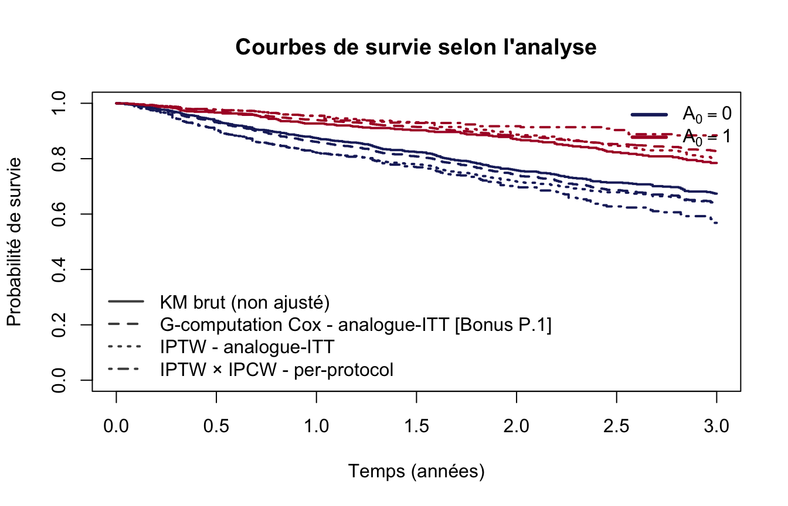

4 Conclusion
Comparaison graphique
Récapitulatif des estimations
| Analyse | Estimand | Ajustement | S(3) - A₀=0 | S(3) - A₀=1 | Δ survie |
|---|---|---|---|---|---|
| KM brut (non ajusté) | - | Aucun | 0.674 | 0.784 | 0.111 |
| Q1 - G-computation Cox [Bonus P.1] | Analogue-ITT : effet d’initier l’exposition | Confusion initiale (X, L₀) - modèle du résultat | 0.641 | 0.828 | 0.187 |
| Q1 - IPTW | Analogue-ITT : effet d’initier l’exposition | Confusion initiale (X, L₀) - modèle de l’exposition | 0.636 | 0.803 | 0.167 |
| Q2 - IPTW × IPCW (per-protocol) | Analogue per-protocol : effet de maintenir l’exposition | Confusion initiale + déviation de stratégie | 0.568 | 0.884 | 0.316 |
Discussion
Ce que nous apprenons de chaque analyse
Analyse brute : la différence de survie observée entre \(A_0=1\) et \(A_0=0\) n’est pas interprétable causalement. Les groupes ne sont pas comparables à l’inclusion (\(X\), \(L_0\) diffèrent).
Analogue-ITT (G-computation Cox et IPTW - Q1) : après ajustement sur les caractéristiques initiales, ces deux méthodes estiment le même estimand : l’effet d’initier l’exposition au temps 0, quelle que soit la compliance ultérieure. C’est l’estimand le plus proche d’un essai clinique en intention de traiter. La G-computation ajuste via un modèle du résultat, l’IPTW via un modèle de l’exposition. Si les deux convergent, la confiance dans le résultat est renforcée.
Analogue per-protocol (IPTW × IPCW - Q2) : en censurant artificiellement les individus qui dévient de leur stratégie et en corrigeant ce biais par IPCW, on estime l’effet d’initier et de maintenir l’exposition. Cet estimand est plus proche d’un essai per-protocol.